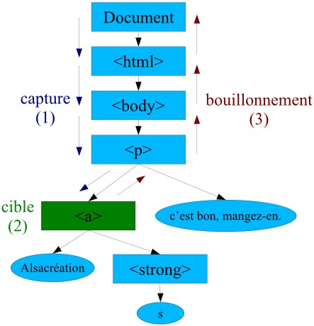

Le paramètre EVENT :
Une fois l'objet Event créé, il se propage dans l'arbre DOM selon un flux bien précis déterminé par sa cible :
- Phase de capture : l'événement se propage de la racine du document (incluse) à la cible (exclue).
- L'événement atteint la cible.
- Phase de bouillonnement (bubbling) : l'événement se propage dans le sens inverse : de la cible (exclue) à la racine du document (incluse).
le flux d'événement peut être interrompu dans le code JavaScript grâce à la méthode stopPropagation.
Il peut servir a traiter globalement les évenements
//doSomething est un event handler
function doSomething(e)
{
if (!e) var e = window.event;
e.cancelBubble = true; // Microsoft . ..
if (e.stopPropagation) e.stopPropagation() ; // W3C
Un click sur un lien texte:
